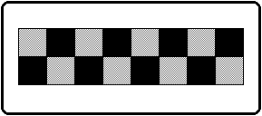

★SGL User's Manual
★データの受け渡し
★SGL User's Manual
★データの受け渡し
本章ではセガサターンで扱うモデルデータ、マテリアル名の仕様、テクスチャデータの構造について解説します。
POINT point_label[]={
POStoFIXED(x,y,z),
POStoFIXED(x,y,z),
POStoFIXED(x,y,z),
POStoFIXED(x,y,z),
.............
};
POINT:ポイントデータ
x,y,z:フロート型の座標値
POLYGON polygon_label[]={
NORMAL(x,y,z),
VERTICES(0,1,2,3),
NORMAL(x,y,z),
VERTICES(0,1,2,3),
.............
};
NORMAL :法線ベクトル
x,y,z :フロート型の座標値
VERTICES :ポリゴンを形成する４点のポイントデータ
ATTR attribute_label=[]={
ATTRIBUTE(Plane,Sort,Texture,Color,Gouraud,Mode,Dir,Option),
....... .... ..... ... ... ..... ... .....
};
ATTR : 属性
Plane : 裏面判定ありかなしかの属性
Sort : Ｚソートの代表点
Texture : テクスチャ名（Ｎｏ．）
Color : カラーデータ
Gouraud : グーローシェーデングの属性
Mode : 描画モード
Dir : ポリゴンやテクスチャの状態
Option : オプション、その他の機能
| グループ | マ ク ロ | 内 容 |
|---|---|---|
| 【１】 | No_Window | Window内の制限を受けない (default) | Window_In | Windowの内側に表示する | Window_Out | Windowの外側に表示する |
| 【２】 | MESHoff | 通常表示 (default) | MESHon | メッシュで表示する |
| 【３】 | ECdis | EndCodeを無効にする | ECenb | EndCodeを有効にする (default) |
| 【４】 | SPdis | 透明ピクセルも表示する (default) | SPenb | 透明ピクセルは表示しない |
| 【５】 | CL16Bnk | 16色 カラーバンクモード (default) | CL16Look | 16色 ルックアップテーブルモード | CL64Bnk | 64色 カラーバンクモード | CL128Bnk | 128色 カラーバンクモード | CL256Bnk | 256色 カラーバンクモード | CL32KRGB | 32768色 RGBモード |
| 【６】 | CL_Replace | 上書き（標準）モード (default) | CL_Shadow | 影モード | CL_Half | 半輝度モード | CL_Trans | 半透明モード | CL_Gouraud | グーローシェーディングモード |
| マ ク ロ | 内 容 |
|---|---|
| sprNoflip | テクスチャを通常表示します |
| sprHflip | テクスチャを左右反転します |
| sprVflip | テクスチャを上下反転します |
| sprHVflip | テクスチャを上下左右反転します |
| sprPorygon | ポリゴンを表示します |
| sprPolyLine | ポリラインを表示します |
| sprLine | 初めの2点を利用した直線を表示します |
| マ ク ロ | 内 容 |
|---|---|
| UseLight | 光源計算を行う |
| UseClip | 頂点が画面外に出たら表示しない |
| UsePalette | ポリゴンのカラーがパレット形式であることを示す |
PDATA pdata_label[]={
point_label,n1,
polygon_label,n2,
attribute_label
};
pdata_label :ＳＧＬに渡すＰＤＡＴＡ型のアドレスを示します。
point_label :ＰＯＩＮＴ型のアドレスを示します。
nl :ポイント数を示します。
polygon_label :ＰＯＬＹＧＯＮ型のアドレスを示します。
n2 :ポリゴン数を示します。
attribute_label:ＡＴＴＲ型のアドレスを示します。
OBJECT object_label[]={
pdata_label,
TRANSLATION(x,y,z),
ROTATION(x,y,z),
SCALING(x,y,z),
object_child,
object_sibling,
pdata_label :ＰＤＡＴＡ型のアドレスを示します。
TRANSLATION :移動量を示します。
ROTATION :回転量を示します。
SCALING :拡大量を示します。
object_child :子供のＯＢＪＥＣＴ型のアドレスを示します。
object_sibling :兄弟のＯＢＪＥＣＴ型のアドレスを示します。
となります。
TEXDAT sample[]={
rgb,rgb,rgb,rgb,rgb,rgb,rgb,rgb
rgb,rgb,rgb,rgb,rgb,rgb,rgb,rgb
.............................
};
TEXTB :テクスチャのテーブル
sample :テクスチャデータのあるラベルを示します（ファイル名そのまま）
hsize,vsize :テクスチャのサイズです（ｈｓｉｚｅは常に８の倍数）
bgr :テクスチャデータの１ピクセル
| B | G | R | |||||||||||||
| 1 | 4 | 3 | 2 | 1 | 0 | 4 | 3 | 2 | 1 | 0 | 4 | 3 | 2 | 1 | 0 |
図4-1 チェッカー模様のテクスチャ

TEXDAT sample[]={
0xffff,0x8000,0xffff,0x8000,0xffff,0x8000,0xffff,0x8000,
0x8000,0xffff,0x8000,0xffff,0x8000,0xffff,0x8000,0xffff
};
★SGL User's Manual
★データの受け渡し